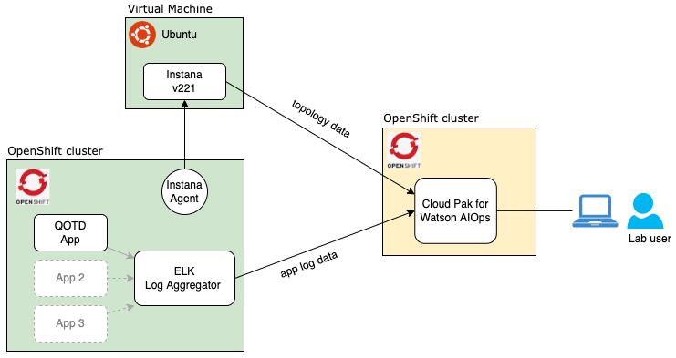

Welcome to the Cloud Pack for Watson AIOps v3.3 Lab
For the complete product documentation, visit this link.
Lab Overview
In this Lab, you will play the role of an IT Operations expert that will configure the Cloud Pack for Watson AIOps (CP4WAIOps) to support IT Operations of a sample business application called QOTD. This application is being "observed" by Instana to pull application performance management metrics including topology. The application logs are being collected by a ElasticSearch (ELK) based log aggregator. These logs are consumed by CP4WAIOps to create a Log Anomaly model. And this model is used to detect application anomalies that will be shown in an incident Story.
These are the different Lab steps:
- Configure the EFK Integration in CP4WAIOps to pull business application logs
- Configure the Instana Integration in CP4WAIOps to pull business application topology
- Update CP4WAIOps Policies to create stories
- Configure CP4WAIOps Log Anomaly Training
- Configure CP4WAIOps Log Anomaly Inference
- Verify CP4WAIOps incident stories
NOTE: The Lab has configuration parameters that you should copy/paste from the tables shown in this web page The Lab call these as Lab Parameters Table. Make sure you copy the full parameter value and not miss any characters.
The following deployment architecture shows the different components that support the Lab:

Lab Terms Definition
Lets define some key CP4WAIOps concepts and terms that will help you understand the Lab:
Events: An event is a record containing structured data summarizing key attributes of an occurrence on a managed entity, which might be a network resource, some part of that resource, or other key element associated with your network, services, or applications. An event may or may not indicate something anomalous and is a point-in-time, immutable statement about the managed entity in question.
Alerts: Alerts are created when one or more events indicate an anomalous condition. Alerts represent an ongoing anomalous condition against a single managed entity. Unlike events, alerts might evolve over time as the condition changes. Alerts have a start and an end time. The creation and evolution of alerts are informed by events. CP4WAIOps automatically correlates alerts to determine what alerts are likely to share a common cause. This is determined based on a combination of:
-
Scope-based correlation - Any alerts which have the same value for the resource field are correlated.
-
Temporal correlation - The system continually analyzes past alerts to determine which alerts tend to frequently co-occur. When these alerts occur together again, they are correlated.
-
Topological correlation - Any alerts which refer to resources within the same Resource group are correlated.
Stories: Stories represent the context around an incident which is currently severely impacting IT Operations. This includes all alerts that are related to the incident and information about how the affected resources are related. The creation and evolution of stories are informed by alerts. Stories can help build the understanding of the current situation and also drive the remediation steps. In other words, stories represent an IT Operations incident and are categorized by priority from 1 (high) to 5 (low).
Policies: Policies are rules that contain a condition and a set of actions that can be manual or automated. They can be triggered to automatically promote events to alerts, reduce noise by grouping alerts into a story, and assign runbooks to remediate alerts. Each policy has an execution priority number which is determines which policy runs first.
Runbooks: A runbook is a controlled set of automated and manual steps that support system and network operational processes. A runbook orchestrates all types of infrastructure elements, such as applications, network components, or servers. We can also use runbooks to document standard procedures that can be leveraged by IT operations.
Actions: Actions are the collection of several predefined steps into a single automated tested entity that can be shared by multiple runbooks. Actions improve runbook efficiency by encapsulating procedures and operations.